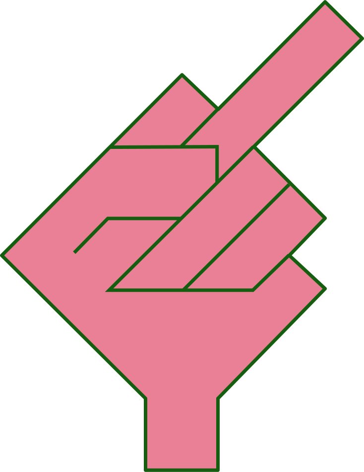
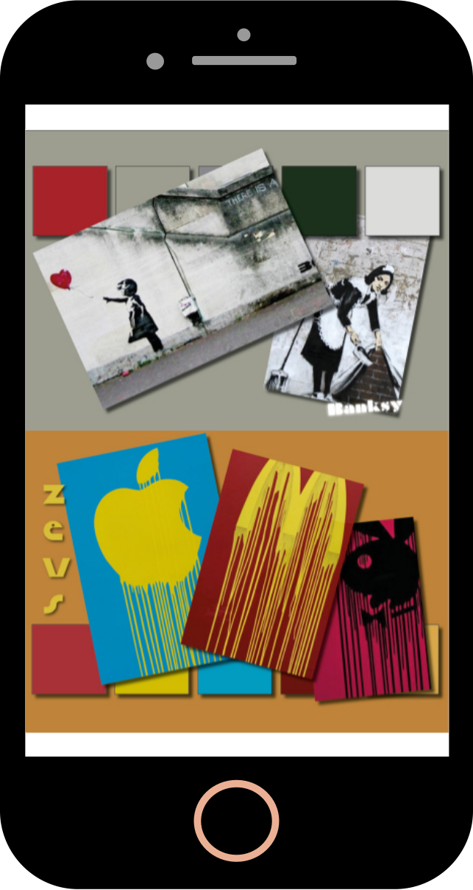

I temaet grundlæggende web, fik vi til opgave at lave en responsiv hjemmeside om en stilart, som vi fik tildelt.
Vi blev i temaet introduceret til HTML og CSS, som vi skulle bruge til at lave hjemmesiden.
Siden er responsiv, og lavet med flexbox. Flexbox er smart at bruge, når en side skal gøres responsiv, fordi den kan distribuere og justere elementer i en container. Den kan lægge elementer ved siden af hinanden, og når siden bliver skaleret ned, kan den wrappe dem, så de ligger under hinanden og passer til et mindre skærmformat. For at noget skal kunne flexe, skal man have en parent med children i. Parenten skal have display flex, og children skal have flex-basis og flexgrow.
GRUNDLÆGGENDE WEB


WEB - RESPONSIV
I temaet grundlæggende web, fik vi til opgave at lave en responsiv hjemmeside om en stilart, som vi fik tildelt.
Vi blev i temaet introduceret til HTML og CSS, som vi skulle bruge til at lave hjemmesiden.
Siden er responsiv, og lavet med flexbox. Flexbox er smart at bruge, når en side skal gøres responsiv, fordi den kan distribuere og justere elementer i en container. Den kan lægge elementer ved siden af hinanden, og når siden bliver skaleret ned, kan den wrappe dem, så de ligger under hinanden og passer til et mindre skærmformat. For at noget skal kunne flexe, skal man have en parent med children i. Parenten skal have display flex, og children skal have flex-basis og flexgrow.

WEB - RESPONSIV
Vi lærte også at god praksis er at designe ‘mobile first’, hvilket betyder at man koder det mindste format først, for så ved brug af media queries efterfølgende, at skalere op til større formater og begynde at flexe, når formatet tillader det.
Vi blev ydermere introduceret til moodboards, wireframes og layoutdiagrammer, som er redskaber man bruger, når man designer web. Moodboard er tiltænkt den designmæssige del, når du skal finde frem til hvilket udtryk din side skal have. Wireframe er en form for tegning af, hvordan layoutet på siden skal være, og layoutdiagram er en kortlægning af HTML, dvs. hvilke semantiske tags og tags der skal være i din kode, og hvilke der ligger inde i andre.
Layoutdiagram og wireframe blev lavet til os, men det er redskaber jeg har gjort meget brug af siden, da jeg har lært at i kode er planlægning ekstremt vigtigt.
